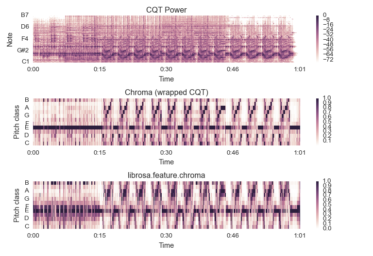

librosa.filters.cq_to_chroma¶
-
librosa.filters.cq_to_chroma(n_input, bins_per_octave=12, n_chroma=12, fmin=None, window=None, base_c=True)[source]¶ Convert a Constant-Q basis to Chroma.
Parameters: n_input : int > 0 [scalar]
Number of input components (CQT bins)
bins_per_octave : int > 0 [scalar]
How many bins per octave in the CQT
n_chroma : int > 0 [scalar]
Number of output bins (per octave) in the chroma
fmin : None or float > 0
Center frequency of the first constant-Q channel. Default: ‘C1’ ~= 32.7 Hz
window : None or np.ndarray
If provided, the cq_to_chroma filter bank will be convolved with window.
base_c : bool
If True, the first chroma bin will start at ‘C’ If False, the first chroma bin will start at ‘A’
Returns: cq_to_chroma : np.ndarray [shape=(n_chroma, n_input)]
Transformation matrix: Chroma = np.dot(cq_to_chroma, CQT)
Raises: ParameterError
If n_input is not an integer multiple of n_chroma
Notes
This function caches at level 10.
Examples
Get a CQT, and wrap bins to chroma
>>> y, sr = librosa.load(librosa.util.example_audio_file()) >>> CQT = librosa.cqt(y, sr=sr) >>> chroma_map = librosa.filters.cq_to_chroma(CQT.shape[0]) >>> chromagram = chroma_map.dot(CQT) >>> # Max-normalize each time step >>> chromagram = librosa.util.normalize(chromagram, axis=0)
>>> import matplotlib.pyplot as plt >>> plt.subplot(3, 1, 1) >>> librosa.display.specshow(librosa.amplitude_to_db(CQT, ... ref=np.max), ... y_axis='cqt_note') >>> plt.title('CQT Power') >>> plt.colorbar() >>> plt.subplot(3, 1, 2) >>> librosa.display.specshow(chromagram, y_axis='chroma') >>> plt.title('Chroma (wrapped CQT)') >>> plt.colorbar() >>> plt.subplot(3, 1, 3) >>> chroma = librosa.feature.chroma_stft(y=y, sr=sr) >>> librosa.display.specshow(chroma, y_axis='chroma', x_axis='time') >>> plt.title('librosa.feature.chroma_stft') >>> plt.colorbar() >>> plt.tight_layout()
